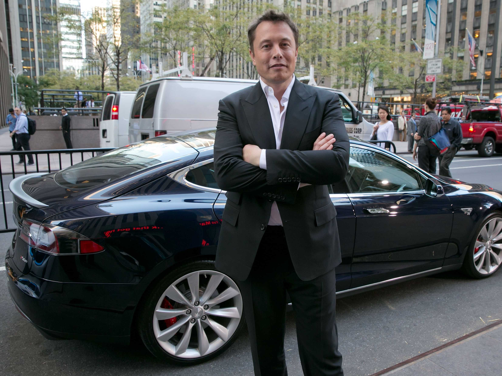

Elon Musk: In less than 20 years, owning a car will be like owning a horse
In 20 years, owning a car will be a lot like owning a horse, Tesla CEO Elon Musk said Tuesday during an earnings conference call.
“I think that all cars will go fully autonomous in long-term. I think it will be quite unusual to see cars that don’t have full autonomy,” Musk said.
“Any cars that are being made that don’t have full autonomy will have negative value. It will be like owning a horse. You will only be owning it for sentimental reasons,” he added.
In 15 to 20 years, automakers will be rolling out fully autonomous vehicles, he said. However, Tesla will have its driverless car ready a lot sooner, he said.
In September, Musk told the Danish new site Borsen that his company's driverless cars would be ready in three years.
Tesla, of course, is already moving its vehicles closer to autonomy.
In October, the company launched its Autopilot system, which offers semi-autonomous safety and convenience features. The system enables functions like automatic braking, automatic steering, self-parallel parking, and automatic lane change. And Tesla uses each car's experience to help other cars learn and improve.
Given that Tesla is betting so big on autonomous vehicles, it's not surprising that there's speculation the company may also be planning to get into transportation services.
During the conference call on Tuesday, Musk was asked if Tesla plans to eventually sell its fully autonomous vehicles to companies like Uber or if it might consider launching its own ride-sharing service in the future.
Musk first declined to comment, but then said that the company's strategy regarding the business was only "half-baked," implying that Tesla may at least be considering mobility services as a new business.